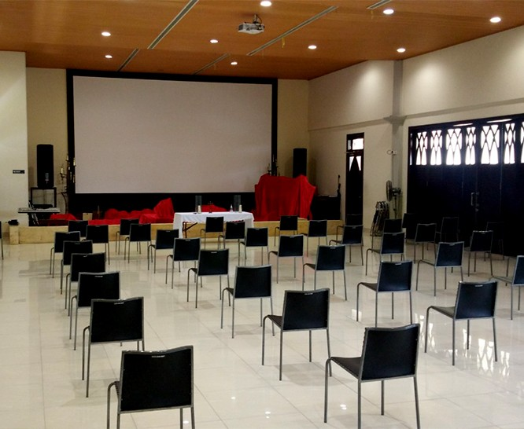

Gereja
Tempat perayaan Ekaristi harian dan mingguan.
Beranda / Tentang Gereja
Romo paroki, jadwal misa, fasilitas, dan sejarah Gereja Gembala Yang Baik.
Imam paroki
Perayaan Ekaristi
Semua jam dalam WIB. Jadwal hari ini diberi tanda.
Intensi misa harian dikirim paling lambat pukul 12.00 WIB.
Fasilitas
Untuk pemakaian aula atau ruang paroki, silakan hubungi sekretariat.
Tempat perayaan Ekaristi harian dan mingguan.

Sudut doa yang tenang untuk berdoa pribadi.

Ruang pertemuan dan kegiatan umat.

Ruang Adorasi
“Marilah kepada-Ku, semua yang letih lesu dan berbeban berat, Aku akan memberi kelegaan kepadamu.” Mat 11:28
Tentang Gereja
Tanah di kawasan Wisma Handayani milik Yayasan Carolus Borromeus Yogyakarta menjadi tempat berdirinya gereja.